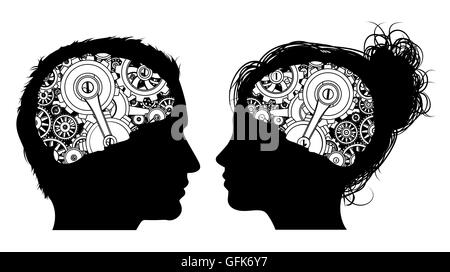

La desviación social es la realización de las conductas fuera de los parámetros y reglas que deben ser observadas por sus integrantes. La desviación social es sancionada de acuerdo al tipo de norma que se violente y no se observe, lo que conlleva al rechazo social. En tal sentido, la desviación puede definirse como la no conformidad a una norma o a una serie de normas dadas que son aceptadas por un número significativo de personas de una sociedad
“La desviación social es parte inevitable de la vida, pero también una oportunidad para el cambio.”
La desviación ha sido explicada por varias teorías sociológicas:
En Guatemala, la desviación social entre jóvenes está fuertemente influenciada por:
Positivas: Reafirma normas sociales, impulsa reformas, genera debate, mejora la equidad social.
Negativas: Aumenta el crimen, desestabiliza el orden, genera violencia, marginalización y castigos legales.
"No basta con castigar la desviación: debemos comprenderla para prevenirla."Comprender la desviación social nos permite abordarla desde una perspectiva preventiva, educativa y estructural. No se trata solo de castigar a quienes transgreden normas, sino de transformar las condiciones que empujan a muchas personas, especialmente jóvenes, a estos caminos. Es responsabilidad de la sociedad, del Estado, de las familias y de cada individuo participar activamente en construir una comunidad más justa e inclusiva.
¿Qué harías si vieras una conducta desviada en tu comunidad?
¿Es posible que una persona etiquetada como "desviada" cambie?
¿Las normas sociales que seguimos son siempre justas?
¿Tú mismo has actuado fuera de las normas alguna vez?
¿Cómo puede tu comunidad ayudar a los jóvenes en riesgo?